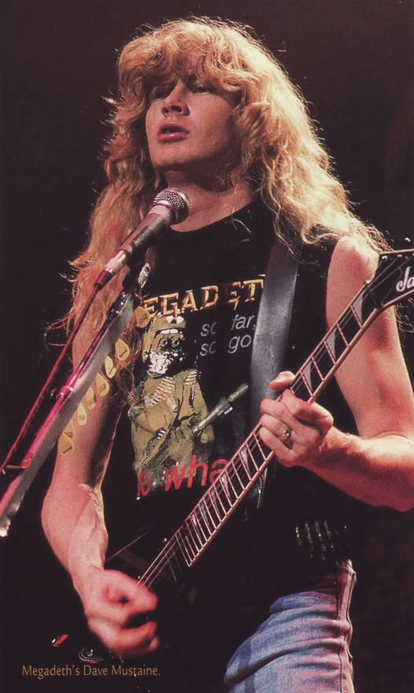

Em sua carreira Dave Mustaine passou por diversas bandas, sendo elas:
Panic foi a primeira banda de Mustaine. A formação inicial era Dave Harmon na bateria, Tom Quecke na guitarra, Bob Evans no baixe Pat Voelkes como vocalista, com Mustaine na guitarra solo. O primeiro show,realizado em Dana Point, contou com Mike Leftwych como baterista substituto.[24] Leftwych e um técnico de som morreram em um acidente de carro após o show. Mustaine afirmou que depois que a banda começou a se desfazer em 1981, Quecke também morreu em um acidente de carro logo depois.
Em 1981, Mustaine dissolveu o Panic e se juntou ao Metallica como guitarrista principal. O baterista da banda, Lars Ulrich, havia postado um anúncio em um jornal local, The Recycler, procurando um guitarrista principal. Em suas próprias palavras, Mustaine se lembra de seu primeiro encontro com James Hetfield e Ulrich: "Eu estava na sala me aquecendo e saí e perguntei: 'Bem, vou fazer um teste ou o quê?', e eles disseram: 'Não, você conseguiu o emprego.' Eu não conseguia acreditar como tinha sido fácil e sugeri que tomássemos uma cerveja para comemorar.
O Metallica começou a gravar seu primeiro álbum intitulado Kill 'Em All em 1983, mas a permanência de Mustaine com o Metallica durou pouco. Em 11 de abril de 1983, depois que o Metallica dirigiu até Nova Iorque para gravar seu álbum de estreia, Mustaine foi oficialmente expulso da banda por causa de seu alcoolismo, abuso de drogas, comportamento excessivamente agressivo e conflitos pessoais com os membros fundadores Hetfield e Ulrich, um incidente ao qual Mustaine se refere como "sem aviso, sem segunda chance".
